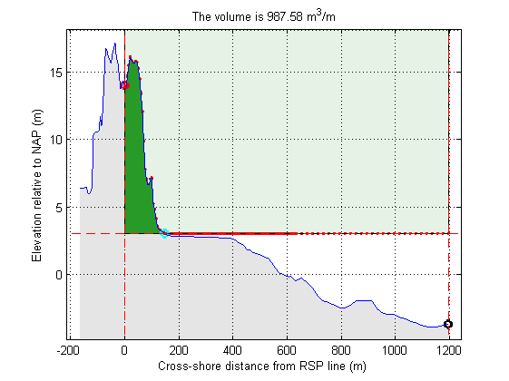

Read some data
See the previous JarKus tutorial for a detailed explanation
url = jarkus_url; id = nc_varget(url,'id'); transect_nr = find(id==8005700)-1; year = 1970 + floor(nc_varget(url,'time')/365); year_nr = find(year == 1979)-1; xRSP = nc_varget(url,'cross_shore'); z = nc_varget(url,'altitude',[year_nr,transect_nr,0],[1,1,-1]); x = xRSP(~isnan(z)); z = z(~isnan(z));
Available options
First we want an overview of available jarkus functions
help jarkus
Contents of jarkus: jarkus_areaName2AreaCode - returns jarkus area code of selected jarkus area name jarkus_check - Checks validity of jarkus result structure jarkus_createtransectstruct - create jarkus transect struct jarkus_curvature - Derives the coastal curvature from JARKUS data jarkus_curvature_test - Test function for jarkus_curvature function jarkus_decurve - Removes spatial curvatures from a JARKUS results struct jarkus_deriveCurvature - Derives the coastal curvature from JARKUS data jarkus_deriveCurvature_test - Test function for jarkus_deriveCurvature function jarkus_findCrossings - routine to find crossings of 2 profiles jarkus_getBKL - gets BKL values based on transectID jarkus_getMKL - returns the cross shore coordinate of the volume based coastal indicator MKL jarkus_getTKL - returns the cross shore coordinate of the TKL (te toetsen kustlijn) jarkus_getVolume - generic routine to determine volumes on transects jarkus_getVolumeFast - generic routine to determine volumes on transects jarkus_googleearth - Plots jarkus transects into google earth jarkus_grid2netcdf - converts Jarkus grid struct to netCDF-CF file jarkus_interpolatenans - Interpolates the missing altitude values in jarkus transects jarkus_merge - Merges transect altitudes in specific dimension jarkus_netcdf2grid - converts netCDF-CF file to Jarkus grid struct jarkus_plotMKL - plot MCL jarkus_plot_in_googleEarth - plot one or more jarkus transects in google Earth jarkus_readTransectDataNetcdf - create transect structure out of jarkus netcdf file jarkus_shoreline - Returns the location of the shoreline based on a set of jarkus transects jarkus_transect2grid - converts Jarkus transect struct to Jarkus grid struct jarkus_transect2netcdf - converts Jarkus transect struct to netCDF-CF file jarkus_transect2oldtransect - converts Jarkus transect struct jarkus_transects - Retrieves a selection of JARKUS data from repository jarkus_tutorial_calculate_MKL - JarKus MKL calculations jarkus_tutorial_calculate_volume - JarKus volume calculations jarkus_tutorial_coordinates_RSP_2_RD - Coordinate conversion from RSP to RD jarkus_tutorial_plot_in_googleEarth - Jarkus & Google Earth jarkus_tutorial_reading_data_1 - Extracting JarKus data from netCDF (1) jarkus_tutorial_reading_data_2 - Extracting JarKus data from netCDF (2) jarkus_updategrid - update Jarkus grid struct with jarkus_raaien.txt & jarkus_tideinfo.txt jarkus_url - returns the link to the jarkus netCDF. jarkus_url_grid - returns the links to the jarkus grid netCDF's.
Apparently, there are two (competing) functions in the toolbox that can calculate volumes: jarkus_getVolume and jarkus_getVolumeFast to find out differences, click on the help links
jarkus_getVolumeFast
Firs an example using jarkus_getVolumeFast
We need to define a box within which the volume can be computed, as volume if not defined for a line.
UpperBoundary = 1000; LowerBoundary = 3; LandwardBoundary = 0; SeawardBoundary = max(x);
and the we call the function. We use the additional 'plot' argument to get a plot of the result.
[Volume] = jarkus_getVolumeFast(x, z, UpperBoundary, LowerBoundary,... LandwardBoundary, SeawardBoundary,'plot')
Volume = 987.5781
jarkus_getVolume
to be added...
Volume difference between two transects
to be added...